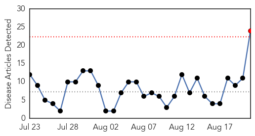
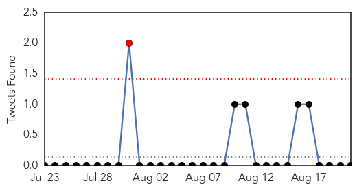
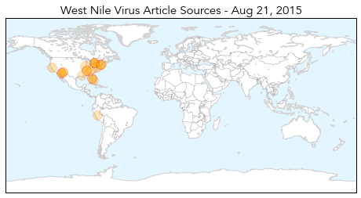

Dengue Fever
30-Day Web Trend
0 alerts, 0 warnings

30-Day Twitter Trend
0 alerts, 0 warnings

Article Locations

Article Confidences

Top Articles:
- 0.956
- Institute for Translational Medicine GMO Mosquitoes to Prevent Dengue Fever
- 0.943
- No respite in sight from monsoon-related ailments
- 0.922
- Health Ministry reviews preparedness on Dengue in Delhi
- 0.909
- Health Min holds review meet on prevention of dengue in Delhi
- 0.881
- Delhi Government Asked to Take Measures to Spread Awareness on Dengue Prevention, Control
- 0.847
- Google Flu Trends Will Now Report Directly To Health Organizations
- 0.818
- Nicaragua and ALBA – working out a truly democratic health system
- 0.809
- Stay alert to prevent dengue outbreak, civic bodies told
- 0.763
- Dengue: Authorities to inspect four hospitals including AIIMS
- 0.600
- Six NCKU students contract dengue fever
Top Tweets:
-
No tweets found for Aug 21, 2015
West Nile Virus
30-Day Web Trend
1 alerts, 0 warnings

30-Day Twitter Trend
1 alerts, 0 warnings

Article Locations
Article Confidences
Top Articles:
- 0.997
- TPH confirms first case of West Nile virus in Toronto this year
- 0.996
- 4 deaths in Arizona prompt mosquito concerns
- 0.994
- 3 human cases of West Nile virus reported in Tennessee, including one in Blount
- 0.991
- Maricopa County Investigating Mosquito-Borne Outbreaks, West Nile Virus, Encephalitis
- 0.989
- District reports first West Nile virus case this summer
- 0.977
- West Nile Virus case confirmed in Toronto resident
- 0.972
- West Nile Virus Found in 15 Connecticut Communities
- 0.970
- Napa bird found with West Nile Virus
- 0.963
- Toronto confirms first human case of West Nile virus this year
- 0.959
- Pinellas Issues West Nile Virus Advisory
- 0.940
- It’s Mosquito Season; Take Precautions to Stay Safe from Diseases
- 0.939
- Will County reports spike in West Nile mosquitoes
- 0.888
- Human case of West Nile virus found in Madison County
- 0.869
- West Nile virus activity increasing, state warns
- 0.835
- Sizable Increase in West Nile-Positive Mosquitoes
- 0.819
- 3 human cases of West Nile virus reported in Tennessee, including one in Blount. News Source
- 0.804
- 20 West Nile virus infections diagnosed so far this year
- 0.801
- Mosquitos test positive for West Nile in Flanagan; dead bird in Peru
- 0.792
- The Arlington Health Department Informs Residents On Mosquito Bites & Breeding
- 0.757
- Three in TN test positive for West Nile virus, 1 in East TN
- 0.722
- Mosquito-borne illness advisory issued in Pinellas
- 0.708
- Three in TN test positive for West Nile virus
- 0.643
- Health department urges residents to be vigilant against mosquitos
- 0.639
- Maricopa County seeing 2 mosquito-borne outbreaks
Top Tweets:
-
No tweets found for Aug 21, 2015